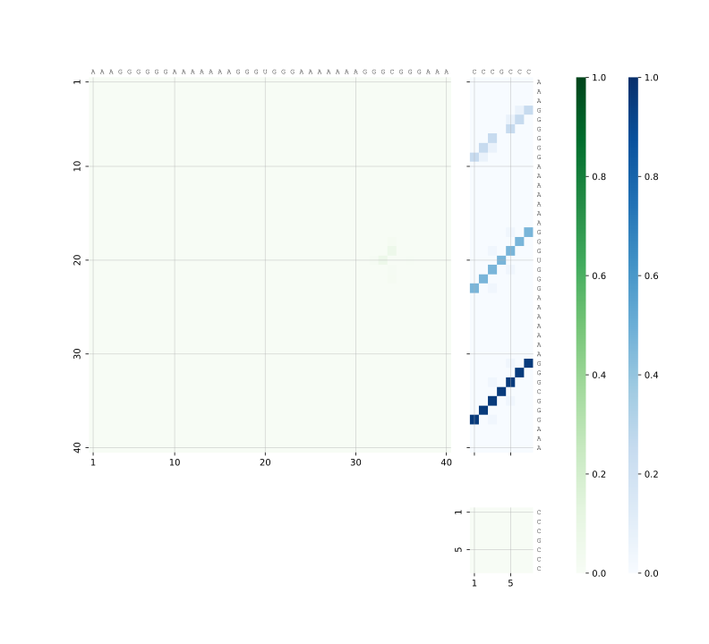
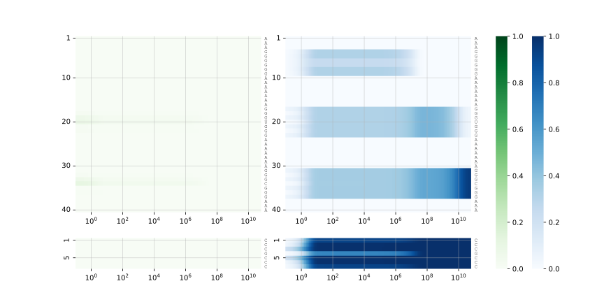

RNAInterKin (RIKin)
RNAInterKin (RIKin) computes the kinetics of RNA–RNA interaction — how two RNAs find and settle into their interaction structure over time — using a detailed RNAup/IntaRNA-inspired interaction model built on RNA secondary structure and the full Turner nearest-neighbor energy model.
Where most RNA–RNA interaction tools predict a single, most likely interaction structure, RIKin instead predicts how the population of possible interaction states evolves over time: which states form first, which are transient, and which the system ultimately settles into.
 |  |
Predicted probabilities of the most prominent interaction states over time (left), and the structures of those states (right), for a small toy example (see Quick example below).
Table of contents
- Background
- Installation
- Quick example
- Usage
- Output directory layout
- More examples
- License
- Authors and contacts
Background
Predicting RNA kinetics is computationally challenging on its own; the dynamics of RNA–RNA interaction are substantially more demanding still, due to the huge space of possible joint conformations. RIKin tackles this with a series of measures:
- RNA interactions are studied at the level of secondary structure, with elementary step conformational changes (transitions) between states.
- Secondary structure interaction states are abstracted as RNAup/IntaRNA-like states, each representing an ensemble of interactions. The induced transitions between these states are computed directly by efficient algorithms.
- Sparsification techniques and constraints restrict the size of the computational problem in controlled ways.
- The energy landscape of these states is coarse-grained in two steps: a fast discrete coarse-graining, followed by a novel continuous coarse-graining.
- The resulting Master Equation of the Markov process is solved by matrix exponentiation, using the Padé method.
RIKin implements this as a pipeline of C++ tools (state enumeration, coarse-graining), an Octave routine (solving the Master Equation), and Python tooling (pipeline orchestration and plotting), tied together by a single driver script, rikin_pipeline.py.
Installation
Installation from the Conda package
We recommend installing RNAInterKin from the rikin Bioconda package.
Create and activate a dedicated environment first:
Then install:
This pulls in all runtime dependencies automatically — including ViennaRNA, LocARNA, Octave, and the Python scientific stack (NumPy, pandas, SciPy, Matplotlib, seaborn) used by the plotting stage.
Compilation/installation from the source repository
The tools can also be compiled and installed after cloning the source repository. This requires a build toolchain with a C++ compiler and autotools. We describe installation into a Conda environment, pulling the ViennaRNA/LocARNA dependencies from Bioconda:
Note: the
compilerspackage (conda-forge's meta-package for a platform-matched C/C++ compiler) is required, not optional — RIKin's ViennaRNA/LocARNA dependencies are themselves built with the conda toolchain, and linking against them with a non-conda system compiler (e.g. plain/usr/bin/clang++) can fail with confusing linker errors, since conda's compiler-activation scripts translate certain flags in a way a system compiler won't.
Quick example
rikin_pipeline.py runs the complete pipeline — enumeration, coarse-graining, solving the Master Equation, and plotting — for a pair of RNA sequences:
Results, including the plots below, are written to the example/ output directory. The state-probability kinetics and top-state structures are the same plots already shown at the top of this document.
| | |
| Predicted state probabilities over time | Structures of the most prominent states |
 |  |
| Base-pair probability dotplot | Per-nucleotide pairing probabilities over time |
Equivalently, sequences can be given via FASTA files instead of directly on the command line:
See More examples below for further, biologically motivated examples (with a real bacterial sRNA–mRNA pair) and how to reproduce all figures shown here.
Usage
Pipeline stages
rikin_pipeline.py coordinates the following stages, in order:
| Stage | Tool | What it does |
|---|---|---|
| 1. State enumeration + sort | rikin_enum | Enumerates candidate interaction/structure states for the two input sequences |
| 2. Discrete coarse-graining | rikin_barriers | Groups states into basins and computes the transitions between them |
| 3. Continuous coarse-graining | rikin_prune | Further prunes/merges the basin graph, and computes partition functions and rates |
| 4. Solve Master Equation | rikin_xrates.m (Octave script) | Solves the resulting Master Equation via Padé matrix exponentiation, giving state probabilities over time |
| 5. Plotting | rikin_plot.py | Renders the full set of kinetics plots from the run's result files |
rikin_pipeline.py is a convenience wrapper that runs these in sequence, with consistent file naming and the ability to skip stages whose output already exists.
Useful rikin_pipeline.py options (see CliReference.md for the complete, current list):
-o, --outdir DIR— output directory--seqA SEQ,--seqB SEQ— the two sequences, given directly--fastaA FILE,--fastaB FILE— the two sequences, given as FASTA files (mutually exclusive with--seqA/--seqBfor the corresponding sequence)-c, --config FILE— JSON file deep-merged on top of the global config (see below)--reuse— skip stages whose output files already exist inoutdir, to resume an interrupted run or re-plot without recomputing--dryrun— print the commands that would be run, without executing them--bindir DIR— look for therikin_*tools inDIRinstead of next to the script--global-config FILE— override the default global config (rikin_pipeline.cfgnext to the script)
Configuration file
Pipeline parameters live in a JSON config file. On startup, rikin_pipeline.py loads rikin_pipeline.cfg from next to itself (override with --global-config), and optionally deep-merges a run-specific file passed via -c/--config on top of it. The schema:
common_optsare passed to bothrikin_enumandrikin_barriers.enum_opts,barriers_opts,xrates_optsare passed to the correspondingly named stage only.prune_optsare passed torikin_prune, alongside--preexpf-first <association_prefactor>.plot_optsconfigures the final plotting stage.
Only the keys you want to override need to be present in a run-specific -c/--config file — everything else falls back to rikin_pipeline.cfg. See Examples for several such override files in practice.
Command-line tools
Each stage's underlying tool can also be run standalone, e.g. for debugging or custom workflows. The table gives a brief description; see CliReference.md for each tool's actual --help output.
| Tool | Purpose | Full option reference |
|---|---|---|
rikin_enum | Enumerate candidate interaction/structure states for the two input RNAs | CliReference.md |
rikin_barriers | Construct the discretely coarse-grained basin/state system | CliReference.md |
rikin_prune | Prune/continuously coarse-grain the state system and compute rates | CliReference.md |
rikin_xrates.m | Solve the Master Equation (Octave script, has its own shebang — run directly, not via octave rikin_xrates.m) | CliReference.md |
rikin_plot.py | Render kinetics plots from a completed run's result files | CliReference.md |
Output directory layout
A completed run's outdir contains, among others:
| File | Contents |
|---|---|
sorted_states.gz | Enumerated, sorted candidate states |
bg | Basin graph after discrete coarse-graining |
barriers_track.gz, track-ipps-barriers.gz | Barrier-stage tracking data |
pf, bar, rates.gz | Partition functions, basins, and rates after pruning |
kin | Solved kinetics (state probabilities over time) |
plots.done | Marker file indicating plotting completed (used by --reuse) |
These are intermediate/result files consumed by later pipeline stages; the plots produced by the final stage are the primary human-readable output.
More examples
The Examples directory contains several further, biologically motivated examples — including a real bacterial sRNA–mRNA pair (E. coli MicA sRNA and the ompA mRNA 5′UTR) and a designed kissing-hairpin (KHP) system — along with a script to reproduce all of them and a notebook that regenerates the figures shown throughout this README. See Examples/README.md for details.
License
RNAInterKin is distributed under the GNU Affero General Public License v3.0 or later (AGPL-3.0-or-later). See COPYING for the full license text.
Authors and contacts
- Rolf Backofen, University of Freiburg
- Sebastian Will, École Polytechnique